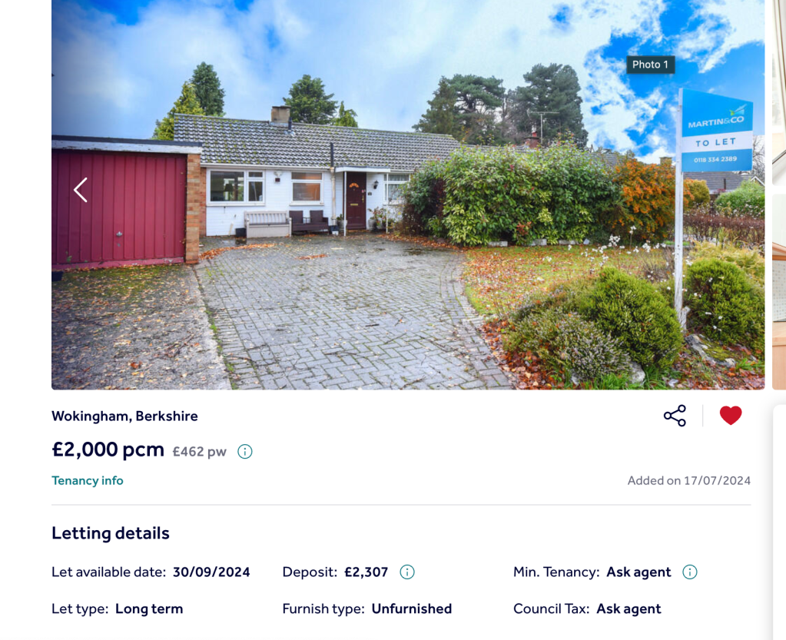
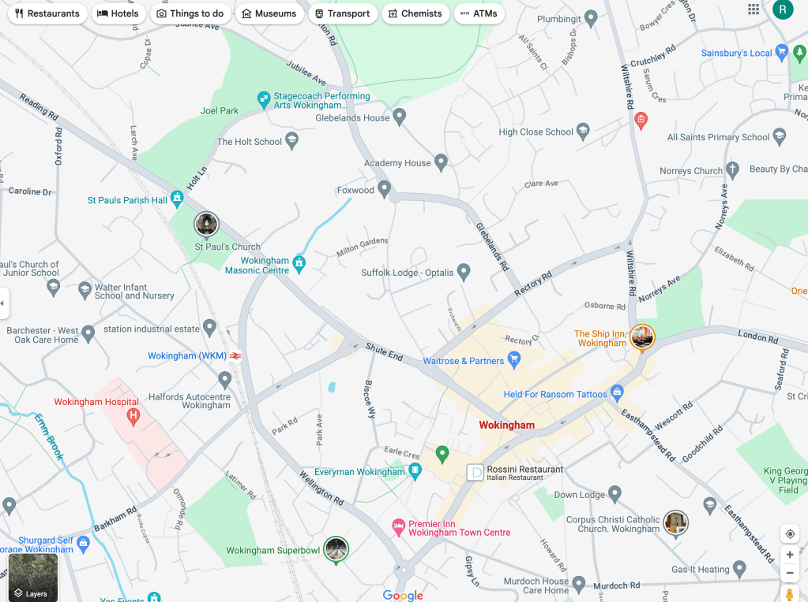
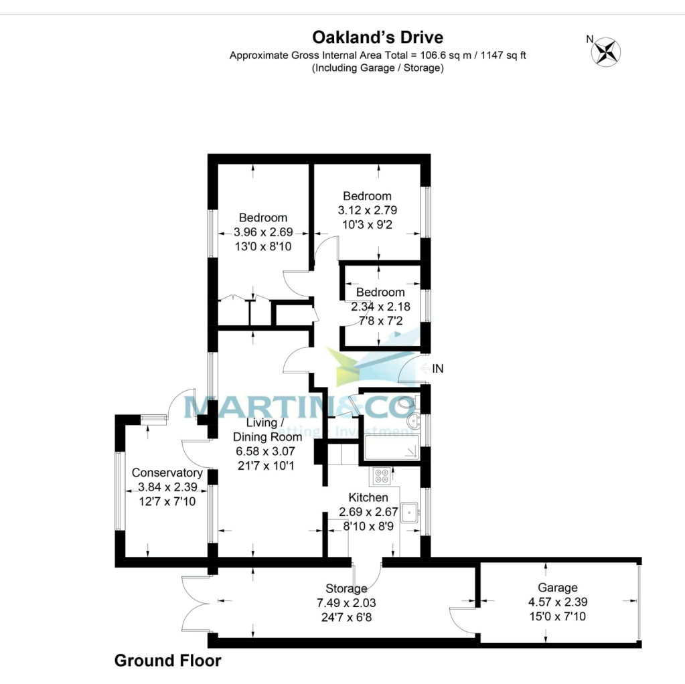
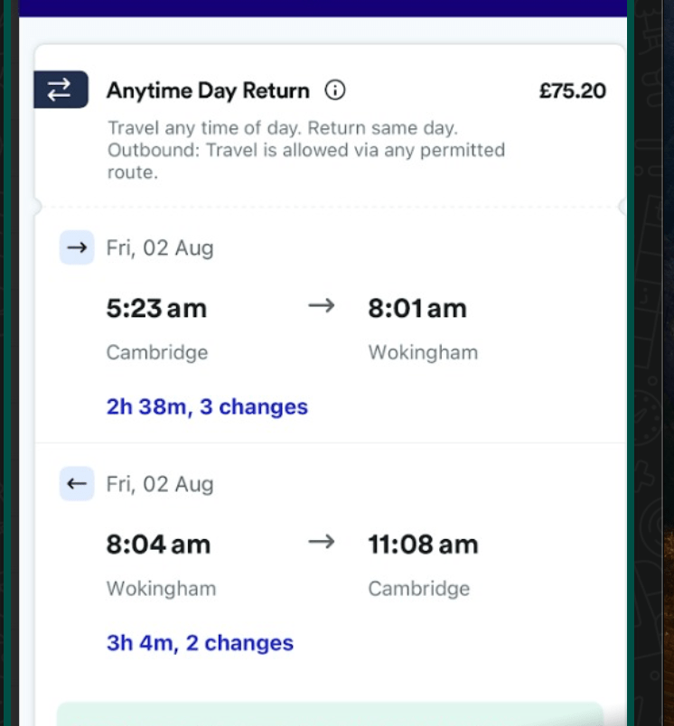

Comparing Cambridge and Wokingham - A Comprehensive Guide
Score the 2 Places: Cambridge vs. Wokingham
When considering a move, it's essential to evaluate factors such as geography, population, economy, education, housing, lifestyle, crime rates, and internet access. Here, we compare two charming English locations: Cambridge and Wokingham, focusing on living with rent and moving with work, supporting a family with my partner and two daughters.
Comparing Cambridge and Wokingham: A Detailed Guide
Geography and Location
-
Cambridge: Located in eastern England, Cambridge is a historic city renowned for the prestigious University of Cambridge, about 60 miles north of London. The picturesque River Cam flows through the city.
-
Wokingham: Situated in Berkshire, South East England, this market town dates back to Saxon times and is approximately 40 miles west of London, close to Reading, and part of the Greater London Urban Area.
Population and Demographics
-
Cambridge: Population of around 130,000, characterized by a high student population and a diverse, international community.
-
Wokingham: Smaller population of about 46,000, primarily residential with a mix of families and professionals, steadily growing.
Economy and Employment
-
Cambridge: Thrives on education, research, and technology sectors (Silicon Fen), with high employment rates and average salaries.
-
Wokingham: Economy supported by retail, services, and some technology firms, acting as a commuter town with many residents working in London or Reading. Average salaries are lower than in Cambridge but still above the national average.
Education
-
Cambridge: Home to world-class education, including the University of Cambridge and numerous prestigious secondary schools.
-
Wokingham: Offers good quality primary and secondary schools, such as The Holt School and St Crispin's School. It is close to universities in Reading and London.
Housing and Cost of Living
-
Cambridge: High living costs driven by demand from the university and tech industry, featuring a mix of historic and modern housing.
-
Wokingham: Offers attractive suburban housing with more space and green areas. Housing costs are generally lower than in Cambridge but still high. Central living has similar amenities, with Cambridge offering more options. Both towns have gyms, but Cambridge has higher-end options like David Lloyds. In Wokingham, driving is necessary to reach some amenities.
Culture and Lifestyle
-
Cambridge: Rich cultural scene with museums, theaters, and music venues, famous for punting on the River Cam and vibrant student life. After living there for five years, we’ve had the necessary exposure.
-
Wokingham: Provides a more suburban lifestyle with family-friendly activities, a historic town center with markets, and local events. Offers easy access to the countryside and outdoor activities and presents a new environment for us.
Transport
-
Cambridge: Well-connected by road (A14, M11) and rail (direct trains to London King's Cross), cycling-friendly with extensive bike lanes, bus services, and park-and-ride options.
-
Wokingham: Good transport links by road (M4, A329) and rail (direct trains to London Waterloo), less emphasis on cycling but good local bus services. Close to major airports like Heathrow and Gatwick, offering international flights to the USA.
Crime Rates
-
Cambridge: Generally safe, with some petty theft and student-related issues, but lower violent crime rates compared to many urban areas.
-
Wokingham: Known for low crime rates, one of the safest places in the UK, with common crimes being burglary and vehicle crime.
Internet Access
Both locations offer excellent internet infrastructure with widespread availability of high-speed broadband and fiber-optic connections. Public Wi-Fi is available in town centers and key areas, beneficial for remote workers and commuters. My work in Wokingham offers a steady office environment to focus on complex technologies like Kubernetes and Openshift.
Relocations
Antifragility
Keeping the business address in Cambridge and getting the mail through a provider makes sense. Relocating and introducing the change would build the necessary skills and would let us leverage to become stronger and focus on our professional work.
Conclusion
Both Cambridge and Wokingham offer unique advantages. Cambridge, with its historic charm, vibrant student life, and strong tech industry, provides a dynamic and culturally rich environment. Wokingham, with its family-friendly suburban lifestyle, excellent schools, and lower crime rates, offers a peaceful and safe place to live with convenient access to larger urban areas.
Additional Considerations for Wokingham
Financial Savings
Moving to Wokingham could save approximately £1,000-£3,000 per month. (Nursery and kids' entertainments are costly in Cambridge without a garden while living centrally)
Living Space
Offers larger living spaces with access to a garden, ideal for families.
Proximity to London
Closer proximity to London and major international airports.
Family-Friendly
The garden will entertain the kids and provide a safe outdoor space for them to play.
New Experiences
Opportunity to explore the west side of London, offering new experiences.
Exploring Wokingham
In two years, explore Wokingham and the surrounding area, potentially moving on to the next project or building a YouTube business on the side.
Job Stability
A 24-month contract provides stability, allowing meaningful time in one place and flexibility for future moves.
Past Limitations
Moving now is timely and feasible, completing necessary paperwork for citizenship and family processes.
Less Travel Costs
£400 from Cambridge to Wokingham a month.
Flexibility
Living in Wokingham allows flexibility and better positioning to secure contracts due to its proximity to London and Reading. Wokingham could enable more contracts in the future compared to Cambridge.
Overall, moving to Wokingham offers substantial financial savings, enhanced living space, and career opportunities, making it an attractive option given your job's location and benefits. Setting up your video production studio within your new home further adds to the convenience and cost-effectiveness of the move. Additionally, the flexibility and increased opportunities for finding contracts in Wokingham and its surrounding areas, compared to Cambridge, are significant benefits to consider. The opportunity to explore the west side of London adds an exciting new dimension to your living experience, and the garden provides a valuable space for entertaining kids and enjoying outdoor activities.
Relocation Timeline
-
Home: Move within 2 months
-
Studio: Move within 4 months
Rationale
Focus on contract work, family, and video production.
Relocating and Well-being
Relocating is a significant decision that encompasses a multitude of factors ranging from practical logistics to emotional and mental health considerations. This blog post will explore the various aspects of relocation, drawing from a detailed conversation analysis that highlights personal goals, family dynamics, and mental well-being.
Setting and Achieving Goals
Relocation often starts with setting personal and financial goals. One key aspect is outlining clear objectives for the next 12 months. Goals might include:
-
Supporting Loved Ones: Mentally and emotionally supporting family members through the transition.
-
Administrative Tasks: Obtaining necessary documents like passports.
-
Financial Stability: Paying off debts to ensure a smooth transition without financial strain.
Having these goals in mind provides a roadmap for the move, ensuring that every step taken is purposeful and directed towards achieving these milestones.
Passport Comparison and Travel Freedom
When considering relocation, especially internationally, understanding the benefits of different passports is crucial. A detailed comparison might include:
-
Visa-Free Access: Analyzing which passport (e.g., UK, USA, Turkey) offers the most visa-free or visa-on-arrival destinations.
-
Travel Benefits: Considering other travel-related advantages such as ease of renewal, dual citizenship policies, and international reputation.
Such comparisons highlight the importance of mobility and the freedom to travel, which can significantly impact the quality of life post-relocation.
Job and Moving Considerations
A critical factor in the decision to move is the availability of job opportunities and the stability of employment in the new location. Important points to consider include:
-
Job Market: Researching the demand for specific skills and industries.
-
Employment Stability: Ensuring a steady income to support the family.
-
Relocation Worthiness: Weighing the benefits of moving against potential disruptions to family routines and social networks.
Risks > Accepting the risk with a new role, things might not seem as they are
Balancing these considerations helps in making an informed decision that supports long-term career growth and family stability.
Emotional and Mental Health
Relocating can be stressful and emotionally taxing. Addressing mental health is vital to ensure a smooth transition. Tips for managing mental health during relocation include:
-
Stress Management: Practicing meditation and mindfulness to stay focused on the present.
-
Acknowledging Trauma: Recognizing and addressing past traumatic experiences that may resurface during the move.
-
Relaxation Techniques: Finding activities that promote relaxation and mental well-being.
By prioritizing mental health, individuals and families can navigate the emotional challenges of relocating more effectively.
Family Dynamics and Decision Making
Relocation decisions impact all family members, and it's essential to consider their roles and contributions. Key aspects include:
-
Empowerment: Allowing family members, particularly those who may feel less in control, to take charge of specific tasks, such as finding a new home.
-
Independence: Encouraging autonomy and decision-making can boost confidence and ensure that everyone feels involved in the process.
Balancing decision-making responsibilities fosters a sense of teamwork and mutual support within the family.
Health Considerations
Health is another critical factor during relocation. For example, managing health transitions like peri-menopause requires:
-
Medical Consultation: Seeking professional advice to address health needs.
-
Supplements and Medications: Ensuring access to necessary health supplements and medications in the new location.
Proactively addressing health concerns helps mitigate the physical stresses of relocating and ensures overall well-being.
Conclusion
Relocating is a multifaceted journey that requires careful planning, practical decision-making, and a focus on emotional and mental health. By setting clear goals, understanding travel benefits, considering job opportunities, and prioritizing family dynamics and health, individuals and families can navigate the complexities of moving. Ultimately, a balanced approach that blends practical considerations with emotional support ensures a successful and fulfilling relocation experience.
Major Places in Wokingham
-
Waitrose
-
Fire Station
-
Pool
-
Burger King
-
Train Station




Imported from rifaterdemsahin.com · 2024